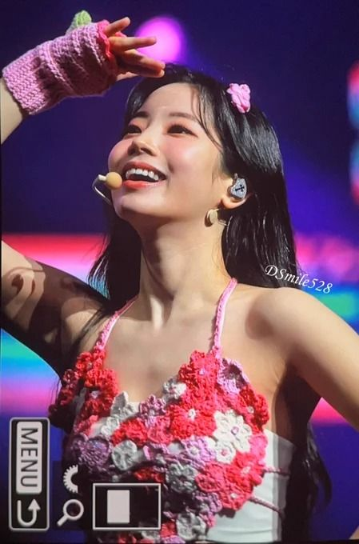

TWICE's Dahyun To Miss Taipei Concerts Due To Stress Fracture: JYP Issues Statement

In a move that prioritizes health over performance, JYP Entertainment has confirmed that TWICE member Dahyun will not participate in the group's three consecutive concerts at Taiwan's Taipei Dome, scheduled for March 20-22, 2026. The decision follows medical advice regarding an ongoing ankle stress fracture that has limited the artist's ability to perform TWICE's demanding choreography.
The announcement, released through official channels just hours before the first show, sent ripples through the ONCE fandom as Taiwan prepared to welcome one of K-pop's most successful girl groups to its largest indoor arena.
The Medical Situation
According to JYP Entertainment's official statement, Dahyun has been managing a stress fracture in her ankle for several weeks. While the injury initially seemed manageable, medical professionals advised against the "intense choreography and stage movements" that characterize TWICE's high-energy performances.
"After careful discussions based on medical advice, we have made the difficult decision to have Dahyun sit out the Taipei performances," the statement read. "The primary concern is that premature intensive activity could exacerbate the injury, potentially leading to a more severe setback that could sideline her for an even longer duration."
Stress fractures, often caused by repetitive force and overuse, are common injuries among dancers and performers. Recovery typically requires extended rest, and returning to activity too quickly can result in complete fractures that require surgical intervention.
Artist's Response
JYP noted that Dahyun "expressed a strong personal desire to perform" despite the injury, highlighting the difficult emotional aspects of the decision. For K-pop idols, missing scheduled performances can be particularly distressing, as it affects not only their fans but also their fellow group members who must adjust formations and cover parts.
Dahyun has been with TWICE since the group's formation through the Mnet survival show "Sixteen" in 2015. Known for her bright personality, rap skills, and the viral "eagle dance," she has become one of the group's most recognizable members.
The 27-year-old has not released any personal statements about missing the concerts, though fans have flooded social media with messages of support urging her to prioritize her recovery.
The Physical Toll of K-Pop
Dahyun's injury brings renewed attention to the physical demands placed on K-pop performers. TWICE's choreography, known for its precision and energy, requires extensive rehearsal and conditioning. The group has been on a demanding world tour schedule, with concerts across Asia, North America, and Europe.
"The K-pop industry has not adequately addressed the toll that constant touring and performance takes on artists' bodies," said Dr. Park Min-soo, a sports medicine specialist in Seoul who has treated entertainment industry clients. "We see stress fractures, torn ligaments, and chronic pain issues at rates that would concern any sports organization."
TWICE members have faced health challenges in the past. Jeongyeon took an extended hiatus in 2020-2021 due to anxiety and neck issues, and Mina has been open about her struggles with anxiety that have occasionally limited her participation in group activities.
Taipei Dome: A Major Venue
The Taipei Dome, Taiwan's largest indoor arena with a capacity exceeding 40,000, represents a significant stop on TWICE's ongoing tour. The three-night run was expected to draw over 120,000 fans across the shows, making it one of the largest K-pop events in Taiwan's history.
TWICE has maintained a particularly strong fanbase in Taiwan since their debut. The group's previous Taiwan concerts have consistently sold out, and their music regularly charts on Taiwanese platforms. The Taipei Dome concerts were seen as a celebration of that relationship.
Despite one member's absence, the remaining eight members—Nayeon, Jeongyeon, Momo, Sana, Jihyo, Mina, Chaeyoung, and Tzuyu—are expected to deliver performances with adjusted formations. JYP Entertainment stated that "the production team has made necessary modifications to ensure a complete and satisfying concert experience."
Fan Reactions: Support and Understanding
The ONCE fandom's response has been overwhelmingly supportive, with fans expressing concern for Dahyun's health rather than disappointment over her absence. Social media quickly filled with messages under hashtags like #GetWellSoonDahyun and #DahyunWeWait.
"Of course we wanted to see all nine members, but Dahyun's health comes first," wrote Taiwanese fan account @TWICETaiwan. "We love her and want her back healthy. Take all the time you need!"
Some fans who had traveled specifically to see Dahyun expressed disappointment but ultimately understanding. "I came from Japan hoping to see OT9, but I'd rather she rest and recover properly than risk making things worse," said one fan waiting outside the venue.
The Industry Response
JYP Entertainment's decision to announce Dahyun's absence and explain the medical reasoning has been praised by some industry observers as a model of transparency. K-pop agencies have historically been criticized for pushing artists to perform through injuries or providing minimal information about health issues.
"This is how it should be handled," commented entertainment industry critic Kim Soo-young. "Clear communication, prioritizing health, and trusting fans to understand. Other agencies should take notes."
However, others questioned whether the injury should have been managed earlier to prevent reaching this point. "If she's been dealing with this for weeks, why wasn't the tour schedule adjusted sooner?" asked one comment on a Korean forum. "Prevention is better than cure."
Recovery Timeline
JYP Entertainment has not provided a specific timeline for Dahyun's return, stating only that her participation in future tour dates will be "determined based on her recovery progress and medical advice." Stress fractures typically require 6-8 weeks of rest for proper healing, though individual cases vary.
TWICE has additional tour dates scheduled in the coming months, including stops in Southeast Asia and potential festival appearances. Whether Dahyun will be able to rejoin for these events remains uncertain.
For now, fans can only wait and hope, sending their support across the digital waves to a performer who has given so much joy but now must take time to heal.
A Reminder of Human Limits
In an industry that often projects an image of superhuman stamina and unwavering perfection, Dahyun's injury serves as a reminder that K-pop idols are, ultimately, human beings with physical limitations. The glamour of stadium concerts and chart-topping hits masks the wear and tear that comes with years of intensive training and performance.
As TWICE takes the Taipei Dome stage tonight—eight members instead of nine—the empty space will speak volumes about the sacrifices embedded in the K-pop dream. And somewhere, resting her ankle and watching from afar, Dahyun will be there in spirit, waiting for the day she can rejoin her sisters on stage.
TWICE's Taipei Dome concerts continue through March 22. Updates on Dahyun's condition will be provided as available.